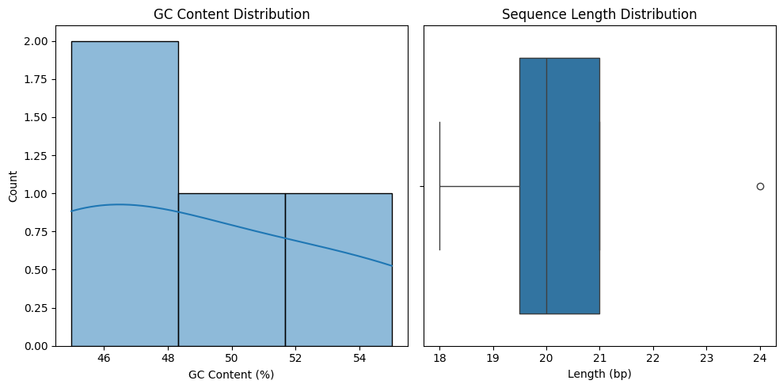

!pwd/content!pwd/contentfrom google.colab import drive
import os
drive.mount('/content/drive')
os.chdir('drive/MyDrive/2024-cnu-lecture')Mounted at /content/drive!pwd/content/drive/MyDrive/2024-cnu-lectureI want to learn “2. Data Handling and Analysis”. can you explain me a brief explanation and examples?
Sure! Data handling and analysis are essential skills in Python, especially for tasks like manipulating datasets, performing statistical analyses, and creating visualizations. We’ll focus on the key libraries used for these purposes: NumPy, Pandas, and Matplotlib/Seaborn.
NumPy is a powerful library for numerical operations and handling arrays.
Installation:
!pip install numpyimport numpy as np
# Creating a 1D array
arr1 = np.array([1, 2, 3, 4, 5])
# Creating a 2D array
arr2 = np.array([[1, 2, 3], [4, 5, 6]])
print(arr1)
print(arr2)
# Element-wise operations
arr3 = arr1 * 2
print(arr3)
# Mathematical functions
print(np.sqrt(arr1))[1 2 3 4 5]
[[1 2 3]
[4 5 6]]
[ 2 4 6 8 10]
[1. 1.41421356 1.73205081 2. 2.23606798]
import numpy as np
arr = [1, 2, 3]
print(arr)
print(type(arr))
a = np.array([1,2,3])
print(a)
print(a.dtype)
print(a.shape)
print(type(a))[1, 2, 3]
<class 'list'>
[1 2 3]
int64
(3,)
<class 'numpy.ndarray'>arr2 = np.array([[1,2,3], [4,5,6]])
print(arr2)
print(type(arr2))
print(arr2.shape)
print(arr2.dtype)[[1 2 3]
[4 5 6]]
<class 'numpy.ndarray'>
(2, 3)
int64a = np.arange(1, 10).reshape(3,3) # [1, 10)
print(a)
a = np.ones((3,4), dtype=np.int16)
b = np.ones((3,4), dtype=np.int16)
print(a)
print(b)
print(a+b)
print(a-b)dir(np)Pandas is a powerful library for data manipulation and analysis. It provides data structures like DataFrame, which is similar to tables in databases or spreadsheets.
pip install pandas
from pandas import Series, DataFramegenes = Series([0.1, 0.2, 1.4, 0.6, 1.1])
print(genes)0 0.1
1 0.2
2 1.4
3 0.6
4 1.1
dtype: float64genes = Series([0.1, 0.2, 1.4, 0.6, 1.1], index=['A', 'B', 'C', 'D', 'E'])
print(genes)A 0.1
B 0.2
C 1.4
D 0.6
E 1.1
dtype: float64import pandas as pd
df = pd.DataFrame([[0, 4, 5], [0, 6, 7], [20, 30, 40]],
index=[1, 2, 3], columns=['P', 'Q', 'R'])
print(df) P Q R
1 0 4 5
2 0 6 7
3 20 30 40import pandas as pd
data = {
'Name': ['Alice', 'Bob', 'Charlie'],
'Age': [25, 30, 35],
'Height': [5.5, 6.0, 5.8]
}
df = pd.DataFrame(data)
print(df) Name Age Height
0 Alice 25 5.5
1 Bob 30 6.0
2 Charlie 35 5.8data = [
{'Name': 'Alice', 'Age': 25, 'Height': 5.5},
{'Name': 'Bob', 'Age': 30, 'Height': 6.0},
{'Name': 'Charlie', 'Age': 35, 'Height': 5.8}
]
df = pd.DataFrame(data)
print(df) Name Age Height
0 Alice 25 5.5
1 Bob 30 6.0
2 Charlie 35 5.8genes = {'A': [0.5, 0.1, 0.3],
'B': [0.8, 0.9, 0.4]}
print(genes)
genes_df = DataFrame(genes)
print(genes_df)
print(genes_df['A'])
print(type(genes_df['A']))
genes_df = DataFrame(genes, columns=['B', 'A'], index=['day1', 'day2', 'day3'])
print(genes_df){'A': [0.5, 0.1, 0.3], 'B': [0.8, 0.9, 0.4]}
A B
0 0.5 0.8
1 0.1 0.9
2 0.3 0.4
0 0.5
1 0.1
2 0.3
Name: A, dtype: float64
<class 'pandas.core.series.Series'>
B A
day1 0.8 0.5
day2 0.9 0.1
day3 0.4 0.3data = [
{'Name': 'Alice', 'Age': 25, 'Height': 5.5},
{'Name': 'Bob', 'Age': 30, 'Height': 6.0},
{'Name': 'Charlie', 'Age': 35, 'Height': 5.8}
]
df = pd.DataFrame(data)
print(df)
Name Age Height
0 Alice 25 5.5
1 Bob 30 6.0
2 Charlie 35 5.8# Selecting columns
ages = df['Age']
print(ages)
# Filtering rows
adults = df[df['Age'] > 18]
print(adults)
# Adding a new column
df['Weight'] = [65, 70, 75]
print(df)
# Grouping and Aggregating
grouped = df.groupby('Name').mean()
print(grouped)0 25
1 30
2 35
Name: Age, dtype: int64
Name Age Height
0 Alice 25 5.5
1 Bob 30 6.0
2 Charlie 35 5.8
Name Age Height Weight
0 Alice 25 5.5 65
1 Bob 30 6.0 70
2 Charlie 35 5.8 75
Age Height Weight
Name
Alice 25.0 5.5 65.0
Bob 30.0 6.0 70.0
Charlie 35.0 5.8 75.0genes1 = Series([0.1, 0.2, 1.4, 0.6, 1.1], index=['A', 'B', 'C', 'D', 'E'])
genes2 = Series([0.1, 0.2, 1.4, 0.6, 1.1], index=['B', 'C', 'D', 'E', 'A'])
genes1 + genes2A 1.2
B 0.3
C 1.6
D 2.0
E 1.7
dtype: float64print(genes2.sort_values())
print(genes2.sort_index())B 0.1
C 0.2
E 0.6
A 1.1
D 1.4
dtype: float64
A 1.1
B 0.1
C 0.2
D 1.4
E 0.6
dtype: float64print(genes_df['A'])
print(genes_df.loc['day1'])
print(genes_df.index)
print(list(genes_df.columns))day1 0.5
day2 0.1
day3 0.3
Name: A, dtype: float64
B 0.8
A 0.5
Name: day1, dtype: float64
Index(['day1', 'day2', 'day3'], dtype='object')
['B', 'A']Matplotlib is a plotting library for creating static, animated, and interactive visualizations. Seaborn is built on top of Matplotlib and provides a high-level interface for drawing attractive statistical graphics.
Installation:
pip install matplotlib seabornimport matplotlib.pyplot as plt
import seaborn as sns
# Line plot
plt.plot([1, 2, 3, 4], [1, 4, 9, 16])
plt.xlabel('X-axis')
plt.ylabel('Y-axis')
plt.title('Line Plot')
plt.show()
data = [
{'Name': 'Alice', 'Age': 25, 'Height': 5.5},
{'Name': 'Bob', 'Age': 30, 'Height': 6.0},
{'Name': 'Charlie', 'Age': 35, 'Height': 5.8}
]
df = pd.DataFrame(data)
print(df)
# Scatter plot with Seaborn
sns.scatterplot(x='Age', y='Height', data=df)
plt.title('Age vs Height')
plt.show() Name Age Height
0 Alice 25 5.5
1 Bob 30 6.0
2 Charlie 35 5.8
Let’s combine these libraries in a practical example. We’ll read a CSV file containing DNA sequences and their properties, perform some analysis, and visualize the results.


I have downloaded a fasta file containing 800 esterase nucleotide sequences. the file is saved at “data/esterase.fa”. can you provide a python code that can read the sequences and compute their length and GC contents ratio?
Certainly! To read a FASTA file containing 800 esterase nucleotide sequences and compute their lengths and GC content ratios, you can use the Biopython library. Here is a Python script that accomplishes this:
Installation
First, make sure you have Biopython installed:
pip install biopythonfrom Bio import SeqIO
from Bio.SeqUtils import gc_fraction
# Function to compute sequence length and GC content
def compute_sequence_stats(seq):
length = len(seq)
gc_content = gc_fraction(seq) * 100 # Convert to percentage
return length, gc_content
# Read the FASTA file and process each sequence
def process_fasta_file(file_path):
records = SeqIO.parse(file_path, "fasta")
esterase_stats = []
for record in records:
length, gc_content = compute_sequence_stats(record.seq)
esterase_stats.append({
"ID": record.id,
"Length": length,
"GC_Content": gc_content
})
return esterase_stats
# Example usage
fasta_file = 'data/esterases.fasta' # Replace with your FASTA file path
esterase_stats = process_fasta_file(fasta_file)
# Print the results
for esterase in esterase_stats:
print(f"ID: {esterase['ID']}, Length: {esterase['Length']} bp, GC Content: {esterase['GC_Content']:.2f}%")ID: EU240725.1, Length: 240 bp, GC Content: 50.83%
ID: NZ_JBBEZD010000544.1, Length: 387 bp, GC Content: 48.06%
ID: NZ_JADOYP010000246.1, Length: 234 bp, GC Content: 55.98%
ID: NZ_JAJAQZ010000712.1, Length: 252 bp, GC Content: 52.78%
ID: NZ_JABFYM010000640.1, Length: 769 bp, GC Content: 52.41%
ID: NZ_CAMPQZ010000345.1, Length: 238 bp, GC Content: 46.64%
ID: NZ_CAMPRQ010000186.1, Length: 259 bp, GC Content: 55.98%
ID: NZ_BFME01000059.1, Length: 302 bp, GC Content: 52.32%
ID: NZ_BFNB01000360.1, Length: 358 bp, GC Content: 46.93%
ID: NZ_JAIMGN010001194.1, Length: 242 bp, GC Content: 42.98%
ID: NZ_VCLZ01000187.1, Length: 251 bp, GC Content: 41.83%
ID: NZ_JAHCTM010000616.1, Length: 275 bp, GC Content: 64.36%
ID: NZ_JAOCNI010000713.1, Length: 230 bp, GC Content: 66.09%
ID: NZ_FZHS01000431.1, Length: 334 bp, GC Content: 52.99%
ID: NZ_CDRU01000784.1, Length: 1944 bp, GC Content: 50.51%
ID: NZ_JAPIWR010000154.1, Length: 658 bp, GC Content: 75.68%
ID: VZFW01000303.1, Length: 420 bp, GC Content: 50.00%
ID: VZHW01000363.1, Length: 398 bp, GC Content: 56.28%
ID: POSU01001761.1, Length: 387 bp, GC Content: 56.07%
ID: POSU01001762.1, Length: 387 bp, GC Content: 55.56%
ID: MOKZ01001167.1, Length: 1295 bp, GC Content: 58.15%
ID: MOKW01000234.1, Length: 901 bp, GC Content: 56.16%
ID: LQWH01000145.1, Length: 1842 bp, GC Content: 49.84%
ID: NZ_NMMG01000172.1, Length: 435 bp, GC Content: 52.41%
ID: NZ_JBBEYZ010000773.1, Length: 414 bp, GC Content: 51.21%
ID: NZ_JAWCWY010000189.1, Length: 816 bp, GC Content: 58.21%
ID: NZ_JAKGPJ010000465.1, Length: 1925 bp, GC Content: 52.05%
ID: NZ_JAYKFE010000133.1, Length: 418 bp, GC Content: 53.11%
ID: NZ_JASKOE010000543.1, Length: 1381 bp, GC Content: 52.93%
ID: NZ_JANDAG010000204.1, Length: 387 bp, GC Content: 48.32%
ID: NZ_UNQA01000192.1, Length: 525 bp, GC Content: 41.90%
ID: NZ_JALSGF010000656.1, Length: 318 bp, GC Content: 56.92%
ID: NZ_JAXASU010000125.1, Length: 404 bp, GC Content: 53.22%
ID: NZ_CAMPQZ010000078.1, Length: 253 bp, GC Content: 55.34%
ID: NZ_CAMPRA010000231.1, Length: 240 bp, GC Content: 59.58%
ID: NZ_JAFBGI010000456.1, Length: 433 bp, GC Content: 51.27%
ID: NZ_WIKF01000117.1, Length: 345 bp, GC Content: 51.59%
ID: NZ_SQBJ01000285.1, Length: 309 bp, GC Content: 40.37%
ID: NZ_JABXCQ010000511.1, Length: 250 bp, GC Content: 49.20%
ID: NZ_JABXCQ010000334.1, Length: 897 bp, GC Content: 48.27%
ID: NZ_JALXTX010000126.1, Length: 250 bp, GC Content: 52.00%
ID: NZ_JACVXQ010000192.1, Length: 301 bp, GC Content: 59.47%
ID: NZ_WSGZ01000048.1, Length: 392 bp, GC Content: 59.44%
ID: NZ_WMDV01000102.1, Length: 404 bp, GC Content: 48.51%
ID: NZ_JAHUVQ010000349.1, Length: 305 bp, GC Content: 36.07%
ID: NZ_JAFBLC010000206.1, Length: 244 bp, GC Content: 50.82%
ID: NZ_JABFJA010000380.1, Length: 249 bp, GC Content: 56.63%
ID: NZ_VKTP01000522.1, Length: 203 bp, GC Content: 34.48%
ID: BIEQ01000022.1, Length: 1026 bp, GC Content: 40.16%
ID: BIEV01000121.1, Length: 1963 bp, GC Content: 37.75%
ID: NZ_PXKG01001199.1, Length: 213 bp, GC Content: 59.15%
ID: NZ_PGKH01000185.1, Length: 621 bp, GC Content: 60.23%
ID: NZ_BFSO01000003.1, Length: 306 bp, GC Content: 57.84%
ID: NZ_BGVT01000816.1, Length: 250 bp, GC Content: 55.60%
ID: NZ_BGNW01000289.1, Length: 433 bp, GC Content: 49.88%
ID: BGJE01000624.1, Length: 794 bp, GC Content: 41.18%
ID: BGGJ01000082.1, Length: 1531 bp, GC Content: 37.69%
ID: BGFB01000003.1, Length: 1259 bp, GC Content: 37.49%
ID: BFOB01000018.1, Length: 1751 bp, GC Content: 43.86%
ID: NZ_JAMSHV010000369.1, Length: 230 bp, GC Content: 62.61%
ID: NZ_VFYT01000041.1, Length: 267 bp, GC Content: 50.19%
ID: NZ_JAUCLC010000223.1, Length: 474 bp, GC Content: 51.48%
ID: NZ_QZWA01000423.1, Length: 317 bp, GC Content: 49.21%
ID: NZ_VKYH01000130.1, Length: 313 bp, GC Content: 58.79%
ID: NZ_WJGC01000209.1, Length: 278 bp, GC Content: 39.57%
ID: NZ_VDDM01000397.1, Length: 241 bp, GC Content: 51.04%
ID: NZ_VDDM01000254.1, Length: 241 bp, GC Content: 50.62%
ID: NZ_QWNL01000169.1, Length: 1281 bp, GC Content: 53.79%
ID: NZ_PXLT01000452.1, Length: 230 bp, GC Content: 56.52%
ID: NZ_UIMI01000098.1, Length: 404 bp, GC Content: 53.22%
ID: NZ_UIMM01000082.1, Length: 404 bp, GC Content: 53.22%
ID: NZ_UIKF01000110.1, Length: 345 bp, GC Content: 51.30%
ID: NZ_UIIK01000146.1, Length: 319 bp, GC Content: 50.16%
ID: NZ_NJKQ01000156.1, Length: 345 bp, GC Content: 51.30%
ID: NZ_CDQY01000268.1, Length: 1957 bp, GC Content: 50.38%
ID: NZ_AZBZ01000307.1, Length: 228 bp, GC Content: 52.63%
ID: NZ_PGKZ01000379.1, Length: 424 bp, GC Content: 50.94%
ID: NZ_JAJNPL010000139.1, Length: 272 bp, GC Content: 44.12%
ID: WSIG01000534.1, Length: 481 bp, GC Content: 43.24%
ID: WSIJ01000343.1, Length: 794 bp, GC Content: 54.53%
ID: VZEG01000574.1, Length: 779 bp, GC Content: 51.48%
ID: VTVU01000709.1, Length: 1696 bp, GC Content: 50.12%
ID: VTVU01000775.1, Length: 1567 bp, GC Content: 52.14%
ID: VTVU01001116.1, Length: 872 bp, GC Content: 52.41%
ID: VTVS01000598.1, Length: 1993 bp, GC Content: 50.68%
ID: VTWB01000880.1, Length: 1080 bp, GC Content: 53.98%
ID: QYOH01000268.1, Length: 1302 bp, GC Content: 39.25%
ID: VSBS01001006.1, Length: 1817 bp, GC Content: 50.69%
ID: VSBS01001719.1, Length: 1009 bp, GC Content: 53.62%
ID: VSBS01002136.1, Length: 726 bp, GC Content: 50.96%
ID: VCLZ01000187.1, Length: 251 bp, GC Content: 41.83%
ID: RRWE01000075.1, Length: 686 bp, GC Content: 54.66%
ID: RDDM01001373.1, Length: 679 bp, GC Content: 52.72%
ID: RDDM01001374.1, Length: 679 bp, GC Content: 52.72%
ID: QZWA01000423.1, Length: 317 bp, GC Content: 49.21%
ID: QWNV01001428.1, Length: 1642 bp, GC Content: 53.23%
ID: QWNL01000169.1, Length: 1281 bp, GC Content: 53.79%
ID: QXHA01000278.1, Length: 908 bp, GC Content: 49.67%
ID: QXHA01000653.1, Length: 212 bp, GC Content: 58.02%
ID: PNRN01000418.1, Length: 330 bp, GC Content: 44.85%
ID: QOFG01000257.1, Length: 678 bp, GC Content: 55.01%
ID: QOEN01000147.1, Length: 678 bp, GC Content: 55.01%
ID: QMKN01000315.1, Length: 269 bp, GC Content: 29.74%
ID: PVOT01000631.1, Length: 1602 bp, GC Content: 52.06%
ID: PTNY01000777.1, Length: 1212 bp, GC Content: 51.98%
ID: PTNY01001592.1, Length: 581 bp, GC Content: 49.74%
ID: POSY01000247.1, Length: 275 bp, GC Content: 67.64%
ID: NWSA01001215.1, Length: 1416 bp, GC Content: 46.75%
ID: NSEH01000513.1, Length: 987 bp, GC Content: 40.53%
ID: NSEG01000063.1, Length: 590 bp, GC Content: 38.47%
ID: NSEG01000567.1, Length: 945 bp, GC Content: 41.06%
ID: LYYB01001385.1, Length: 350 bp, GC Content: 56.29%
ID: LYYB01002058.1, Length: 350 bp, GC Content: 56.29%
ID: LYCC01003203.1, Length: 663 bp, GC Content: 54.75%
ID: LYCC01003217.1, Length: 663 bp, GC Content: 55.05%
ID: LYAA01000061.1, Length: 993 bp, GC Content: 34.34%
ID: LYAA01000929.1, Length: 1501 bp, GC Content: 36.91%
ID: LYAA01001061.1, Length: 403 bp, GC Content: 38.46%
ID: NBCM01001023.1, Length: 398 bp, GC Content: 39.95%
ID: NAFP01000067.1, Length: 462 bp, GC Content: 41.13%
ID: LGLZ01000021.1, Length: 1602 bp, GC Content: 54.00%
ID: MQME01000213.1, Length: 402 bp, GC Content: 41.79%
ID: MOKM01000371.1, Length: 869 bp, GC Content: 32.91%
ID: MOKM01000528.1, Length: 872 bp, GC Content: 35.55%
ID: MOHK01000416.1, Length: 1644 bp, GC Content: 38.69%
ID: MOFV01000270.1, Length: 1176 bp, GC Content: 37.16%
ID: AZCA01000227.1, Length: 900 bp, GC Content: 54.33%
ID: AZCA01000274.1, Length: 562 bp, GC Content: 53.91%
ID: KJ652913.1, Length: 1209 bp, GC Content: 48.39%
ID: GQ167140.1, Length: 894 bp, GC Content: 51.79%
ID: GQ167139.1, Length: 894 bp, GC Content: 51.34%
ID: GQ167138.1, Length: 894 bp, GC Content: 51.23%
ID: GQ167137.1, Length: 894 bp, GC Content: 51.45%
ID: GQ167136.1, Length: 894 bp, GC Content: 51.34%
ID: GQ167135.1, Length: 894 bp, GC Content: 51.23%
ID: GQ167134.1, Length: 894 bp, GC Content: 51.68%
ID: GQ167133.1, Length: 894 bp, GC Content: 51.12%
ID: GQ167132.1, Length: 894 bp, GC Content: 51.12%
ID: GQ167131.1, Length: 894 bp, GC Content: 51.01%
ID: GQ167130.1, Length: 894 bp, GC Content: 51.23%
ID: GQ167129.1, Length: 894 bp, GC Content: 51.23%
ID: GQ167128.1, Length: 894 bp, GC Content: 51.12%
ID: GQ167127.1, Length: 894 bp, GC Content: 51.01%
ID: GQ167126.1, Length: 894 bp, GC Content: 51.23%
ID: GQ167125.1, Length: 894 bp, GC Content: 51.68%
ID: GQ167124.1, Length: 894 bp, GC Content: 51.68%
ID: GQ167123.1, Length: 894 bp, GC Content: 51.68%
ID: GQ167122.1, Length: 894 bp, GC Content: 51.68%
ID: GQ167121.1, Length: 894 bp, GC Content: 51.12%
ID: GQ167120.1, Length: 894 bp, GC Content: 51.57%
ID: GQ167119.1, Length: 894 bp, GC Content: 51.68%
ID: GQ167118.1, Length: 894 bp, GC Content: 51.90%
ID: GQ167117.1, Length: 894 bp, GC Content: 51.90%
ID: GQ167116.1, Length: 894 bp, GC Content: 51.90%
ID: GQ167115.1, Length: 894 bp, GC Content: 51.68%
ID: GQ167114.1, Length: 894 bp, GC Content: 51.90%
ID: GQ167113.1, Length: 894 bp, GC Content: 51.34%
ID: GQ167112.1, Length: 894 bp, GC Content: 52.01%
ID: GQ167111.1, Length: 894 bp, GC Content: 51.90%
ID: GQ167110.1, Length: 894 bp, GC Content: 51.79%
ID: GQ167109.1, Length: 894 bp, GC Content: 52.13%
ID: GQ167108.1, Length: 894 bp, GC Content: 52.13%
ID: GQ167107.1, Length: 894 bp, GC Content: 52.13%
ID: GQ167106.1, Length: 894 bp, GC Content: 52.13%
ID: GQ167105.1, Length: 894 bp, GC Content: 51.57%
ID: GQ167104.1, Length: 894 bp, GC Content: 51.90%
ID: GQ167103.1, Length: 894 bp, GC Content: 52.13%
ID: GQ167102.1, Length: 894 bp, GC Content: 51.34%
ID: GQ167101.1, Length: 894 bp, GC Content: 51.34%
ID: GQ167100.1, Length: 894 bp, GC Content: 51.34%
ID: GQ167099.1, Length: 894 bp, GC Content: 51.45%
ID: GQ167098.1, Length: 894 bp, GC Content: 51.34%
ID: GQ167097.1, Length: 894 bp, GC Content: 51.34%
ID: GQ167096.1, Length: 894 bp, GC Content: 51.34%
ID: GQ167095.1, Length: 894 bp, GC Content: 51.45%
ID: GQ167094.1, Length: 894 bp, GC Content: 51.45%
ID: GQ167093.1, Length: 894 bp, GC Content: 51.90%
ID: GQ167092.1, Length: 894 bp, GC Content: 51.23%
ID: GQ167091.1, Length: 894 bp, GC Content: 51.90%
ID: GQ167090.1, Length: 894 bp, GC Content: 51.90%
ID: GQ167089.1, Length: 894 bp, GC Content: 51.23%
ID: GQ167088.1, Length: 894 bp, GC Content: 51.23%
ID: GQ167087.1, Length: 894 bp, GC Content: 51.45%
ID: GQ167086.1, Length: 894 bp, GC Content: 51.45%
ID: GQ167085.1, Length: 894 bp, GC Content: 51.57%
ID: GQ167084.1, Length: 894 bp, GC Content: 51.90%
ID: GQ167083.1, Length: 894 bp, GC Content: 51.23%
ID: GQ167082.1, Length: 894 bp, GC Content: 51.90%
ID: GQ167081.1, Length: 894 bp, GC Content: 51.90%
ID: GQ167080.1, Length: 894 bp, GC Content: 51.90%
ID: GQ167079.1, Length: 894 bp, GC Content: 51.90%
ID: GQ167078.1, Length: 894 bp, GC Content: 51.90%
ID: GQ167077.1, Length: 894 bp, GC Content: 51.90%
ID: GQ167076.1, Length: 894 bp, GC Content: 51.90%
ID: GQ167075.1, Length: 894 bp, GC Content: 51.90%
ID: GQ167074.1, Length: 894 bp, GC Content: 51.68%
ID: GQ167073.1, Length: 894 bp, GC Content: 51.90%
ID: GQ167072.1, Length: 894 bp, GC Content: 52.01%
ID: GQ167071.1, Length: 894 bp, GC Content: 51.90%
ID: GQ167070.1, Length: 894 bp, GC Content: 51.90%
ID: GQ167069.1, Length: 894 bp, GC Content: 51.90%
ID: EU904569.1, Length: 1125 bp, GC Content: 54.31%
ID: EU904568.1, Length: 1125 bp, GC Content: 54.31%
ID: EU904567.1, Length: 1125 bp, GC Content: 54.31%
ID: EU904566.1, Length: 1125 bp, GC Content: 54.31%
ID: EU904565.1, Length: 1125 bp, GC Content: 54.31%
ID: EU898869.1, Length: 837 bp, GC Content: 54.36%
ID: EU898868.1, Length: 837 bp, GC Content: 54.36%
ID: EU898867.1, Length: 837 bp, GC Content: 54.36%
ID: EU898866.1, Length: 837 bp, GC Content: 54.36%
ID: EU898865.1, Length: 837 bp, GC Content: 54.36%
ID: EU905469.1, Length: 834 bp, GC Content: 48.92%
ID: EU905468.1, Length: 834 bp, GC Content: 48.92%
ID: EU905467.1, Length: 834 bp, GC Content: 48.92%
ID: EU905466.1, Length: 834 bp, GC Content: 48.92%
ID: EU905465.1, Length: 834 bp, GC Content: 48.92%
ID: J04216.1, Length: 1997 bp, GC Content: 53.33%
ID: OQ354675.1, Length: 150 bp, GC Content: 53.33%
ID: MH208303.1, Length: 562 bp, GC Content: 48.75%
ID: MK176600.1, Length: 365 bp, GC Content: 50.68%
ID: JF806497.1, Length: 1282 bp, GC Content: 50.39%
ID: AY230883.1, Length: 405 bp, GC Content: 57.53%
ID: NG_047765.1, Length: 1421 bp, GC Content: 49.89%
ID: KT033766.1, Length: 362 bp, GC Content: 46.41%
ID: KP965724.1, Length: 590 bp, GC Content: 48.64%
ID: KM489072.1, Length: 960 bp, GC Content: 51.56%
ID: X03988.1, Length: 1906 bp, GC Content: 42.39%
ID: NG_047768.1, Length: 1460 bp, GC Content: 37.95%
ID: NG_052372.1, Length: 1706 bp, GC Content: 47.19%
ID: NG_047769.1, Length: 1460 bp, GC Content: 38.05%
ID: NG_047766.1, Length: 1421 bp, GC Content: 50.11%
ID: NZ_JAVUPC010000141.1, Length: 737 bp, GC Content: 53.73%
ID: NZ_JABXCP010000153.1, Length: 1430 bp, GC Content: 54.41%
ID: NZ_JAALJG010000524.1, Length: 1151 bp, GC Content: 54.13%
ID: NZ_SQCG01000189.1, Length: 1533 bp, GC Content: 55.09%
ID: NZ_JAOCNI010000075.1, Length: 1153 bp, GC Content: 54.12%
ID: SCJN01000574.1, Length: 1656 bp, GC Content: 54.95%
ID: WSIA01000575.1, Length: 534 bp, GC Content: 54.31%
ID: VZHX01000756.1, Length: 400 bp, GC Content: 52.25%
ID: VUDU01000077.1, Length: 992 bp, GC Content: 56.75%
ID: MCNL01000086.1, Length: 1274 bp, GC Content: 55.42%
ID: NZ_PGJY01000179.1, Length: 640 bp, GC Content: 49.06%
ID: NZ_PGKT01000479.1, Length: 639 bp, GC Content: 53.99%
ID: NZ_JALLLE010000239.1, Length: 560 bp, GC Content: 55.89%
ID: NZ_JALLLE010000238.1, Length: 560 bp, GC Content: 55.71%
ID: NZ_QOZZ01001003.1, Length: 772 bp, GC Content: 47.67%
ID: NZ_QOZZ01000907.1, Length: 1663 bp, GC Content: 48.23%
ID: NZ_JAKFZI010000544.1, Length: 266 bp, GC Content: 57.89%
ID: NZ_JAKFZI010000543.1, Length: 266 bp, GC Content: 58.65%
ID: NZ_NLSG01000489.1, Length: 515 bp, GC Content: 48.16%
ID: NZ_NLWB01000258.1, Length: 247 bp, GC Content: 53.85%
ID: LC807390.1, Length: 1324 bp, GC Content: 51.66%
ID: NZ_BLBU01000274.1, Length: 1415 bp, GC Content: 53.85%
ID: NZ_BLBW01000651.1, Length: 374 bp, GC Content: 36.90%
ID: NZ_BLBW01000574.1, Length: 1711 bp, GC Content: 42.78%
ID: NZ_JAPTOK010000080.1, Length: 554 bp, GC Content: 57.22%
ID: NZ_JAPTOK010000079.1, Length: 554 bp, GC Content: 57.76%
ID: NZ_JAPTOK010000060.1, Length: 1516 bp, GC Content: 54.09%
ID: NZ_JAPTPP010000079.1, Length: 552 bp, GC Content: 57.79%
ID: NZ_JAPTPP010000078.1, Length: 552 bp, GC Content: 57.25%
ID: NZ_JAPTPP010000058.1, Length: 1517 bp, GC Content: 54.05%
ID: NZ_JAQMZG010000380.1, Length: 240 bp, GC Content: 50.42%
ID: NZ_JAXBSQ010000126.1, Length: 388 bp, GC Content: 51.03%
ID: NZ_JBANPU010000107.1, Length: 1333 bp, GC Content: 46.96%
ID: NZ_JBANPR010000110.1, Length: 1333 bp, GC Content: 46.96%
ID: NZ_JBANOT010000157.1, Length: 468 bp, GC Content: 57.91%
ID: NZ_JBANOT010000156.1, Length: 468 bp, GC Content: 57.48%
ID: NZ_JASKOE010000545.1, Length: 567 bp, GC Content: 50.44%
ID: NZ_JAOCNI010000743.1, Length: 211 bp, GC Content: 55.45%
ID: NZ_JAJPUM010000249.1, Length: 1840 bp, GC Content: 55.27%
ID: NZ_JADOYS010000667.1, Length: 720 bp, GC Content: 50.83%
ID: NZ_JADOYS010000238.1, Length: 723 bp, GC Content: 56.15%
ID: NZ_NWPQ01000314.1, Length: 250 bp, GC Content: 48.00%
ID: NZ_JAYKFR010000158.1, Length: 442 bp, GC Content: 46.83%
ID: NZ_JAYKFH010000061.1, Length: 424 bp, GC Content: 47.88%
ID: NZ_JAYKFK010000074.1, Length: 458 bp, GC Content: 49.13%
ID: NZ_JAYKFJ010000076.1, Length: 424 bp, GC Content: 56.37%
ID: NZ_JAZEUR010000218.1, Length: 667 bp, GC Content: 53.22%
ID: NZ_JAZEUR010000088.1, Length: 1076 bp, GC Content: 50.00%
ID: NZ_PGOF01000221.1, Length: 233 bp, GC Content: 35.19%
ID: NZ_JAWCXI010000322.1, Length: 224 bp, GC Content: 58.93%
ID: NZ_JAWCXL010000294.1, Length: 215 bp, GC Content: 49.30%
ID: NZ_JAWCXJ010000216.1, Length: 224 bp, GC Content: 58.93%
ID: NZ_JAWCXS010000345.1, Length: 210 bp, GC Content: 53.33%
ID: NZ_JAWCZY010000183.1, Length: 224 bp, GC Content: 57.59%
ID: NZ_JAJOGD010000228.1, Length: 391 bp, GC Content: 46.80%
ID: PP210101.1, Length: 843 bp, GC Content: 48.52%
ID: NZ_JAVHUR010000573.1, Length: 735 bp, GC Content: 52.38%
ID: NZ_JAVUPD010001496.1, Length: 232 bp, GC Content: 53.88%
ID: NZ_JAVUPD010000434.1, Length: 357 bp, GC Content: 56.58%
ID: NZ_JAVUPD010000120.1, Length: 773 bp, GC Content: 58.47%
ID: NZ_JANCZM010000126.1, Length: 1823 bp, GC Content: 50.58%
ID: NZ_JANCZO010000264.1, Length: 560 bp, GC Content: 39.29%
ID: NZ_CAIZEY010000334.1, Length: 207 bp, GC Content: 48.79%
ID: NZ_JAKMCD010000715.1, Length: 294 bp, GC Content: 48.98%
ID: NZ_JAKMBP010000369.1, Length: 250 bp, GC Content: 58.00%
ID: NZ_JAKMBR010000582.1, Length: 246 bp, GC Content: 54.47%
ID: NZ_JAKMCL010000625.1, Length: 244 bp, GC Content: 47.95%
ID: NZ_JAKMCL010000451.1, Length: 329 bp, GC Content: 51.06%
ID: NZ_JAJARC010000160.1, Length: 422 bp, GC Content: 50.24%
ID: NZ_SERV01000144.1, Length: 255 bp, GC Content: 53.33%
ID: NZ_SERV01000141.1, Length: 255 bp, GC Content: 54.90%
ID: NZ_SERV01000104.1, Length: 379 bp, GC Content: 51.19%
ID: NZ_SERV01000087.1, Length: 480 bp, GC Content: 57.71%
ID: NZ_JAKFUB010000128.1, Length: 1151 bp, GC Content: 53.43%
ID: NZ_JAKFSS010000096.1, Length: 780 bp, GC Content: 57.44%
ID: NZ_JAKFSS010000095.1, Length: 780 bp, GC Content: 57.44%
ID: NZ_JAKFSS010000074.1, Length: 1383 bp, GC Content: 54.23%
ID: NZ_CCQT01000135.1, Length: 1119 bp, GC Content: 48.79%
ID: NZ_CCQQ01000116.1, Length: 1107 bp, GC Content: 49.23%
ID: NZ_JALSGF010000752.1, Length: 296 bp, GC Content: 55.07%
ID: NZ_VKOU01000247.1, Length: 460 bp, GC Content: 51.09%
ID: NZ_JAJCFL010000228.1, Length: 221 bp, GC Content: 47.51%
ID: NZ_JAHTGQ010000161.1, Length: 409 bp, GC Content: 50.61%
ID: NZ_JAHTGQ010000160.1, Length: 409 bp, GC Content: 50.86%
ID: NZ_JAIZZG010000075.1, Length: 1654 bp, GC Content: 53.87%
ID: NZ_CAJSLO010000311.1, Length: 227 bp, GC Content: 51.54%
ID: NZ_CAJSIT010000424.1, Length: 212 bp, GC Content: 53.30%
ID: NZ_JAIMGT010000240.1, Length: 269 bp, GC Content: 58.36%
ID: NZ_JAHCWX010000222.1, Length: 398 bp, GC Content: 56.03%
ID: NZ_JAHCWX010000212.1, Length: 480 bp, GC Content: 57.71%
ID: NZ_JAHCWX010000209.1, Length: 512 bp, GC Content: 53.91%
ID: NZ_JAHCWX010000201.1, Length: 626 bp, GC Content: 52.56%
ID: NZ_JAHCWX010000200.1, Length: 634 bp, GC Content: 52.21%
ID: NZ_JAHCWX010000185.1, Length: 955 bp, GC Content: 54.97%
ID: NZ_JAINSC010000068.1, Length: 379 bp, GC Content: 50.92%
ID: NZ_JAINSC010000053.1, Length: 585 bp, GC Content: 52.99%
ID: NZ_CAMPQZ010000124.1, Length: 232 bp, GC Content: 50.86%
ID: NZ_CAMPRO010000756.1, Length: 263 bp, GC Content: 55.51%
ID: NZ_CAMPQN010000114.1, Length: 382 bp, GC Content: 49.21%
ID: NZ_CAMPRF010000209.1, Length: 229 bp, GC Content: 50.66%
ID: NZ_CAMPRN010000109.1, Length: 244 bp, GC Content: 50.82%
ID: NZ_CAMPRP010000526.1, Length: 365 bp, GC Content: 54.25%
ID: NZ_CAMPRA010000395.1, Length: 242 bp, GC Content: 55.79%
ID: NZ_CAMPQX010000466.1, Length: 337 bp, GC Content: 50.45%
ID: NZ_JAODWX010000135.1, Length: 468 bp, GC Content: 57.69%
ID: NZ_JAODWX010000134.1, Length: 468 bp, GC Content: 57.48%
ID: NZ_JAODWX010000096.1, Length: 976 bp, GC Content: 53.59%
ID: NZ_JAVXXR010000186.1, Length: 315 bp, GC Content: 50.79%
ID: NZ_JAVXXU010000105.1, Length: 276 bp, GC Content: 52.17%
ID: NZ_CYBF01000366.1, Length: 455 bp, GC Content: 45.93%
ID: NZ_JAVUOZ010000614.1, Length: 370 bp, GC Content: 44.86%
ID: NZ_JAVUOZ010000551.1, Length: 398 bp, GC Content: 59.05%
ID: NZ_JAVUOZ010000319.1, Length: 532 bp, GC Content: 55.45%
ID: NZ_JAVUPC010000692.1, Length: 266 bp, GC Content: 56.77%
ID: NZ_JAVUPC010000403.1, Length: 352 bp, GC Content: 56.53%
ID: NZ_JAVUPC010000400.1, Length: 353 bp, GC Content: 56.09%
ID: NZ_JAVUPF010000560.1, Length: 303 bp, GC Content: 57.10%
ID: NZ_JAVUPF010000552.1, Length: 306 bp, GC Content: 57.19%
ID: NZ_JAVUPK010001228.1, Length: 268 bp, GC Content: 44.03%
ID: NZ_JAGMPD010000204.1, Length: 279 bp, GC Content: 51.25%
ID: NZ_JAGMPD010000203.1, Length: 279 bp, GC Content: 51.61%
ID: NZ_JAGMPD010000188.1, Length: 377 bp, GC Content: 55.97%
ID: NZ_JAGMPD010000181.1, Length: 418 bp, GC Content: 54.78%
ID: NZ_JAGMPD010000180.1, Length: 246 bp, GC Content: 53.25%with open('data/dna_data.csv', 'w') as f:
f.write('Sequence,Length,GC_Content\n')
f.write('ATGCGTACGTAGCTAGCTAG,20,50\n')
f.write('TGCATGCATGCTAGCTAGCAATAT,24,45.0\n')
f.write('GCGTACGTAGCTAGCTAG,18,55.0\n')
f.write('TGCATGCATGCTAGCTAGCA,20,45.0')import pandas as pd
import numpy as np
import matplotlib.pyplot as plt
import seaborn as sns
# Read the CSV file
df = pd.read_csv('data/dna_data.csv')
# Calculate basic statistics
mean_gc = df['GC_Content'].mean()
std_gc = df['GC_Content'].std()
print(f"Mean GC Content: {mean_gc:.2f}%")
print(f"Standard Deviation of GC Content: {std_gc:.2f}%")
# Visualize the data
plt.figure(figsize=(10, 5))
# Histogram of GC content
plt.subplot(1, 2, 1)
sns.histplot(df['GC_Content'], kde=True)
plt.title('GC Content Distribution')
plt.xlabel('GC Content (%)')
# Boxplot of sequence lengths
plt.subplot(1, 2, 2)
sns.boxplot(x=df['Length'])
plt.title('Sequence Length Distribution')
plt.xlabel('Length (bp)')
plt.tight_layout()
plt.show()Mean GC Content: 48.75%
Standard Deviation of GC Content: 4.79%